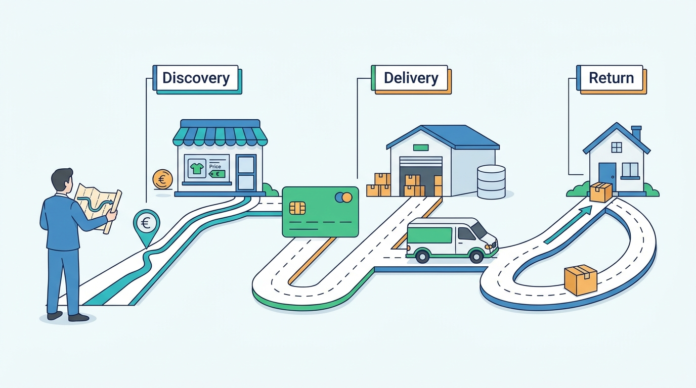

Preface
Introduction: Why Commerce Architecture Matters
AI-assisted: researched and written with Claude Code, images generated with the Gemini API. How this works

Preface
AI-assisted: researched and written with Claude Code, images generated with the Gemini API. How this works
